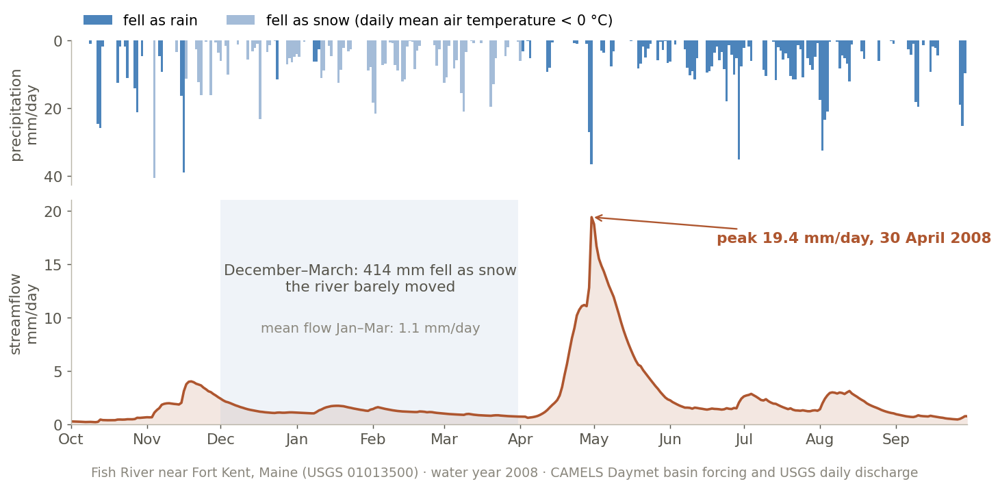
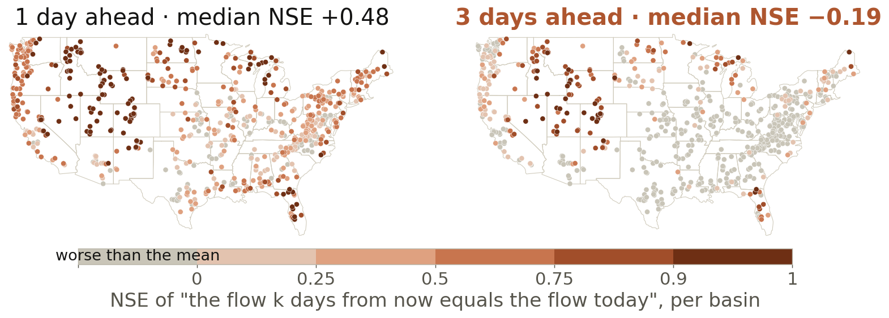
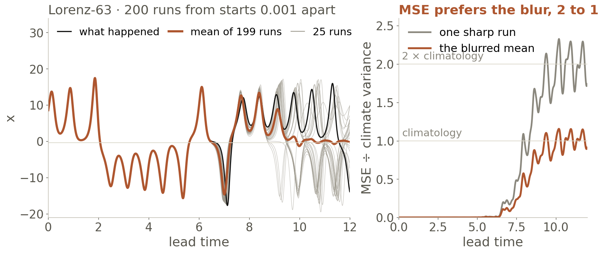
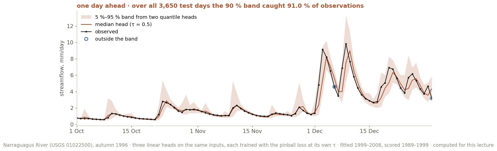

Sequence Models, Autoregressive Forecasting, and Rollout Stability
Thirty-four springs of one river in Maine, one line per year. Every ridge is snow that fell months before it. Today: models that remember — and forecasts that must live on their own output.
Deep Learning Applications in Environmental Big Data · Prof. Hyunglok Kim · GISTImage: daily streamflow of the Fish River near Fort Kent, Maine (gauge 01013500), one line per water year 1981–2014, oldest at the top; orange is 2008, the highest peak of the series. Rendered for this lecture from U.S. Geological Survey (USGS) daily discharge, public domain.
0:00 · Reading + video quiz
Quiz first — 5 minutes, closed book
3 questions on last week’s assigned video — The moment we stopped understanding AI [AlexNet] (Welch Labs, 18 min).
2 questions on this week’s paper — Kratzert et al. 2019.
No AI, no notes. Swap with your neighbor to grade. Pass = 3 of 5 — the video alone can carry you; the paper alone cannot.
Best 8 of 10 count, 0.75% each; an optional handwritten book summary forgives one wrong answer.
No class on 5 October (holiday); Week 6 is 12 October. The 19 October Book Check includes Goodfellow Ch. 10 — this week’s chapter.
Week 5 · 55 min
Today in five blocks — and one chain of cause and effect
1 · Memory — the LSTM, why it still rules rivers, this week’s paper. 2 · Rollout — teacher forcing vs free running; the error recursion, five slides; GraphCast and Pangu.
3 · Blur — squared error hedges; the double penalty. 4 · Probability — quantile and likelihood heads. 5 · The contract — five sentences Note 05 opens with (+ 5 min FLEX).
Journal club (30 · after break) — the three discussion questions. Lab briefing after.
Skills: autoregressive rollout · rollout-curriculum training · exposure bias · hydrologic metrics · time-series headsEvery derivation and reference card is in the Appendix after the lab slide
Part 1 · 12 min
Memory: Recurrence, the LSTM, and the River
What you will see A river that stores snow for five months; why a plain recurrence cannot carry that; the LSTM’s memory lane; persistence across 671 basins; the two metrics; this week’s paper. By the end: read an LSTM cell and compute persistence for a basin.
Why it matters here Memory is physical here — snow, soil, groundwater — and the LSTM is still the strongest rainfall–runoff baseline: Google’s public flood forecasts run on it.
Where it is used Today’s lab and paper · Google Flood Hub · pixel time series in Earth observation · Week 6, where attention removes the product of steps.
Part 1 · Why memory
The input that matters arrived five months earlier
The April flood is set by December snow: a model of this river needs a five-month memory.

414 mm of snow fell in December–March and the river barely moved; in late April it all left in three weeks. A model of April must remember December — 150 daily steps.
water year — October to September, so one winter’s snow and its melt stay in one record. mm/day — flow per basin area, comparable with rain.in the figure — rain hangs from the top (pale = snow), flow rises from the bottom; all 34 peaks came 155–198 days after first snow.
Fish River near Fort Kent, Maine (USGS 01013500) · CAMELS (Catchment Attributes and MEteorology for Large-sample Studies) · computed for this lecture
Part 1 · Gradients through time
Recurrence shares weights across time — and multiplies its gradient
A 150-day memory needs a gradient that survives 150 steps — plain recurrence cannot deliver one.
A recurrent neural network (RNN) carries a state, ht = tanh(W ht−1 + U xt + b) — the same W at every step.
Backpropagation multiplies one factor per step: 0.9¹⁵⁰ ≈ 10⁻⁷, 1.1¹⁵⁰ ≈ 10⁶. Clipping fixes the exploding case (Week 2); the vanishing case needs a new path.
ht — the hidden state, a fixed-size summary of everything read so far. BPTT “backpropagation through time” — backpropagation on the unrolled chain.in the figure — forward left to right with the same W; backward, the orange gradient thins by a factor at each step.
Full derivation and the norm bound: Appendix A1
Part 1 · The LSTM
The LSTM adds to its memory instead of rewriting it
The gate replaces the product — this cell still runs Kratzert’s models, Google Flood Hub and today’s lab.
ct = ft ⊙ ct−1 + it ⊙ gt · ht = ot ⊙ tanh(ct)
Along the lane the derivative is just ft (gates held fixed) — a gate the network sets, not W through tanh. When f ≈ 1, December’s signal reaches April.
LSTM “long short-term memory” (Hochreiter & Schmidhuber 1997). f, i, o — forget, input, output gates, each σ(·) in (0, 1) per cell; g — candidate content; ⊙ — elementwise product.in the figure — only gate products and additions touch the orange lane. GRU “gated recurrent unit” — two gates, same idea (A2).
Part 1 · The CAMELS story
How much of tomorrow’s river is already in today’s?
Persistence is the do-nothing forecast to beat at every lead time — compute it before you train anything.

Memory tracks snow fraction (r = 0.59) and baseflow (r = 0.43), not basin size (0.09, log area): memory is stored water — Kratzert 2018 found an LSTM cell that fills below freezing and drains in the thaw.
CAMELS — 671 US basins, 35 years of daily weather, flow and attributes: hydrology’s ImageNet, and your lab.persistence — “flow k days from now = flow today”. in the figure — its NSE (Nash–Sutcliffe efficiency, next slide) per basin: dark = today predicts the future; grey = worse than the mean.
Newman et al. 2015 · Addor et al. 2017 · test years Oct 1989 – Sep 1999 · computed for this lecture
Part 1 · The two metrics
NSE and KGE — and what doing nothing scores on each
The same do-nothing forecast scores 0.48 on one metric and 0.74 on the other — always show the benchmark row.
NSE is 1 minus the mean squared error over the variance of the observations — everything Part 3 says about squared error applies to it. Every table in Note 05 carries the benchmark row on the metric it reports.
NSE “Nash–Sutcliffe efficiency”: 1 perfect, 0 as good as the observed mean. KGE “Kling–Gupta efficiency”: r timing, α = σ̂/σ spread, β = μ̂/μ bias — a copy of yesterday has α ≈ β ≈ 1, so only its correlation counts.−0.41 — any constant scores KGE ≤ 1 − √2 (taking r = 0), so KGE 0 is not “no skill” (Knoben et al. 2019).
Nash & Sutcliffe 1970 · Gupta et al. 2009 · Knoben, Freer & Woods 2019, Hydrology and Earth System Sciences (HESS) · computed for this lecture · decompositions: Appendix A4
Part 1 · This week’s paper · 2 min
The paper in one slide — and the vocabulary it predates
One model trained on hundreds of rivers beat one model tuned per river; Google Flood Hub is its descendant.
One LSTM for 531 basins, with 27 static attributes; the EA-LSTM lets them set the input gate once per basin — an embedding of the basin, learned.
Median NSE 0.74 against 0.68 for the best model calibrated basin by basin (HBV): large-sample training overtook per-site calibration.
EA-LSTM “entity-aware LSTM” — input gate i = σ(W xs + b) from the static inputs; the weather and the previous state drive the other gates. HBV — the Swedish Hydrologiska Byråns Vattenbalansavdelning bucket model.vocabulary — the paper says “embedding” but never “pretraining” or “fine-tuning”; discussion question 1 asks for the mapping.
Kratzert et al. 2019, HESS 23:5089 · equations, the NSE* loss and the benchmark table: Appendix A3 · optional: Nearing et al. 2024, Nature
Part 1 · Watch at home
The cell, slowly — then the people who took it to the rivers
Bridge to Week 6. Attention connects every step to every other allowed step directly — no product of 150 factors. That is why Transformers replaced recurrent networks almost everywhere, and why the LSTM survived where memory is physical.
large-sample hydrology — one model trained on hundreds of basins at once, the idea of this week’s paper.
Optional, not assigned — the assigned video (Stanford CS231N Lecture 7, 72 min) is in the Appendix; its summary is due with Note 05
Part 2 · 18 min · the headline
Autoregressive Forecasting as a Discipline
What you will see A model that scores 0.90 one day ahead scores 0.35 fifteen days ahead — with perfect rain. Then the formula for why, built over five slides, and two ways the weather models fight it. By the end: run a matched rollout comparison and read its curve.
Why it matters here Every headline machine-learning weather model is a one-step model run on its own output: GraphCast 40 times for ten days. The weather emulator you train in Week 11 does the same twelve times.
Where it is used GraphCast, Pangu-Weather, FuXi and AIFS (the European weather centre’s Artificial Intelligence Forecasting System) · large language models · today’s lab. Contrast case: Google Flood Hub carries hidden state but never feeds its own streamflow back.
Google DeepMind · Why AI Creates Better Weather Forecasts · 2 min — click to play here · one 6-hour step, applied to its own output forty times.
Part 2 · Two regimes
Two ways to feed a model its own past
The model you train and the forecast you run are different objects — GraphCast self-feeds 40 steps, the lab 15.
QUICK Q The model on the next slide scores NSE 0.90 one day ahead and is handed the observed rain for all 15 future days. Does it still score above 0.7 at 15 days? (the rain is perfect)
NO — 0.35. Perfect rain does not save it. At day 1 its input is the observed flow; by day 15 its input is its own fourteenth guess, and every guess carried the error of the one before.
Same weights, same river, same rain: 0.90 → 0.64 (3 days) → 0.49 (7 days) → 0.35 (15 days). The one-day number described the model you trained, not the forecast you would run.
The next slide shows the curve; the five after it, the formula for why it bends.
teacher forcing — the observed value is the next input (Williams & Zipser 1989). free running — the model’s own output is.issue time — the last day whose observations the forecast may use. lead time — how far ahead; skill is a curve over it.
Part 2 · The receipt
Same model, same river: 0.90 on day 1, 0.35 on day 15
The number in an abstract is usually the one-step number; a forecast is judged on a curve against lead time.
A linear model fitted one step ahead, then run free for 15 days with the observed rain: NSE 0.90 → 0.64 (3 d) → 0.49 (7 d) → 0.35 (15 d). Persistence: 0.81 → −0.29. A real model — just not a 0.90 model.
fitted one step ahead — teacher forcing for a linear model. observed rain — a hindcast with a perfect weather forecast; a real forecast would normally do worse.in the figure — each orange strand is one 15-day run; the dashed blue curve is the same model trained on a 3-step loss (slide 21).
Narraguagus River, Maine (USGS 01022500) · fitted 1999–2008, scored 1989–1999 · computed for this lecture
Part 2 · Two errors in every step
Each step carries yesterday’s error forward — and adds its own
The one-step score measures only the second of the two; the rollout curve on slide 14 is made of both.
Feed the forecast back and today’s error has two parts: what survived from yesterday, a · ek, and what today adds, δk+1. Teacher forcing only ever measures δ — NSE 0.90 says σ is small and nothing about a.
a — the slope ∂f/∂y: the share of an input error one step passes on. Our river model: a = 0.911, the coefficient on yesterday’s flow.δ — the fresh one-step miss made from a perfect input; typical size σ ≈ 0.71 mm/day here. e — forecast minus truth.
Narraguagus linear model of slide 14 · the three lines behind the equation: next slide · vector version: Appendix A6
Part 2 · The error recursion, derived
Three lines on the board — and the one approximation
Line 3 is the only approximation: the bracket is the same f at two nearby inputs, so it is slope × gap.
1 · define the fresh miss (what teacher forcing measures):
δk+1 = f(yk) − yk+1 2 · add and subtract f(yk) in the forecast error:
ek+1 = f(ŷk) − yk+1 = [f(ŷk) − f(yk)] + δk+1 3 · first-order Taylor, f(y + h) ≈ f(y) + f′(y)·h with h = ek:
[ … ] ≈ f′(yk) · ek = a · ek ⇒ ek+1 ≈ a · ek + δk+1
For the linear river model line 3 is exact: f(q) = 0.911 q + (rain terms), so f(12) − f(10) = 0.911 × 2 — the rain terms cancel; only the slope on yesterday’s flow survives.
a — ∂f/∂y at the current state: the share of an input error that one step passes on. linear vs LSTM — a linear model has one a everywhere; an LSTM’s a changes with the state, so Appendix A6 writes a Jacobian Jk.
Board: lines 1–3 · unroll on the next slide · vector state and Jk: Appendix A6
Part 2 · Unroll, then take variances
Why errors pile up: unroll one line
Unroll from the observed start; two variance rules then turn the sum into a formula you can check against the river.
start on the truth, e0 = 0: e1 = δ1, e2 = a·e1 + δ2 = aδ1 + δ2,
e3 = a·e2 + δ3 = a²δ1 + aδ2 + δ3, … ek = Σj ak−j δj rule 1 · independent terms: variances add, no cross terms rule 2 · Var(c·δ) = c²σ², so a miss m days old contributes a2m σ² Var(ek) = σ² (1 + a² + a⁴ + … + a2(k−1)) = σ² (1 − a2k) ⁄ (1 − a²)
Old misses fade by a² per step while a new one arrives every step, so the sum climbs fast at first and then settles near σ² ⁄ (1 − a²) — 5.3 σ² for a = 0.9, 5.9 σ² for our river.
geometric sum — 1 + r + … + rk−1 = (1 − rk) ⁄ (1 − r), → 1 ⁄ (1 − r) for |r| < 1; here r = a². assumed — misses independent, equal variance, no error at step 0; the river breaks independence (next slide).
Board derivation · correlated misses, a vector state and the covariance recursion: Appendix A6
Part 2 · What a decides
Same σ², three fates — and our river
The one-step score fixes σ²; a alone decides whether a rollout settles, drifts or explodes.
same one-step NSE 0.90; then a =
0.5
0.9
0.911 (river)
0.95
1
1.05
error variance at day 15, ÷ σ²
1.3
5.0
5.5
8.1
15
32
NSE at day 15
0.86
0.48
0.43
0.17
−0.55
−2.3
the table — NSEk = 1 − MSEk ⁄ Var(y) = 1 − (1 − NSE1) × Var(ek) ⁄ σ²; the one-step score fixes the factor: 0.103 here.in runs — one-step misses are correlated day to day (lag-1 correlation 0.33), so the river climbs faster than the formula.
USGS 01022500, test 1989–1999 · estimate a for any model: nudge yesterday’s input by ε, read today’s change ÷ ε · Appendix A6
Part 2 · From the variance to the score
Four lines turn Var(ek) into the NSE at lead k
MSE is variance plus bias²; with no bias, the one-step score fixes the factor and the recursion the multiplier.
1 · any error: Var(e) = E[e²] − (E[e])² ⇒ MSE = E[e²] = Var(e) + bias² 2 · misses average zero ⇒ ek does too ⇒ MSEk = Var(ek) = Rk σ², with Rk = (1 − a2k) ⁄ (1 − a²) as before 3 · NSEk = 1 − MSEk ⁄ Var(y) = 1 − (σ² ⁄ Var(y)) · Rk 4 · at k = 1, R1 = 1: NSE1 = 1 − σ² ⁄ Var(y) ⇒ σ² ⁄ Var(y) = 1 − NSE1 ⇒ NSEk = 1 − (1 − NSE1) · Rk
MSE = variance + bias²: four errors, two ways
errors
bias
variance
MSE
−1, +1, −1, +1
0
1
1
+1, +3, +1, +3
2
1
5 = 1 + 2²
our river’s rollout errors, test years
lead
bias, mm/day
bias² ÷ MSE
MSE ÷ σ²
1 day
0.02
0.05%
1.00
15 days
0.21
1.3%
6.28
Line 4 is where the recursion meets the scoreboard: the one-step score fixes σ² ⁄ Var(y) at 0.103 and the rollout multiplies it by Rk; a bias would subtract bias² ⁄ Var(y) on top — 1% of the day-15 error here.
bias — the mean error at a lead (forecast minus truth); a drifting model grows it. variance — the spread around that mean; what the recursion tracks.two averages — the recursion averages over the misses, the score over issue days; each issue day is one draw of the misses.
Line 1 is the identity Var(e) = E[e²] − (E[e])², rearranged · the metric decompositions: Appendix A4
Part 2 · Exposure bias
Exposure bias: trained on the truth, run on its own guesses
Training never showed the model its own mistakes, so nothing pinned a down: distribution shift, self-inflicted.
Teacher forcing only shows the model inputs from the world; free running feeds it its own outputs — after a few steps, inputs few training examples looked like.
The one-step loss pins f down on the data; the slope a is set by what f does around it. Our river model learned “91% of yesterday” — a shortcut once yesterday is its own guess.
exposure bias — the model is never exposed, in training, to the inputs it meets at inference: its own mistakes (Ranzato et al. 2016). Week 2’s distribution shift, self-made.in the figure — grey band: where training inputs live; black hops never leave it, the orange rollout does.
The direct fix: let the loss see a — FourCastNet’s 2-step fine-tune, GraphCast’s 12 steps, the lab’s K = 3.
y_hat = y[t] # start on truth
loss = 0
for k in range(1, K+1): # K = 3 in lab
y_hat = model(y_hat, x[t+k])
loss += mse(y_hat, y[t+k])
(loss / K).backward() # through all K
An error at step 1 is paid again at steps 2 … K, so the gradient pushes the model toward states it can recover from. On our linear river a 3-step loss moved 15-day NSE from 0.35 to 0.37 — the lab asks whether an LSTM’s gap is bigger.
K — the rollout length inside the loss; K = 1 is teacher forcing. Memory and compute grow with K; from random weights learn the step first (next slide).in the figure — the line y_hat = model(y_hat, …) is the feedback; orange arrows are the gradients it lets through.
Weather models: train on the rollout, or take fewer steps
Two fixes: shrink a by training on rollouts (GraphCast), or shrink k with bigger jumps per call (Pangu-Weather).
GraphCast (one call = 6 h): first learn the single step, then in the last 3.5% of training roll the loss out 2 → 12 steps — slide 21’s K, grown slowly. Pangu-Weather: four models jumping 1, 3, 6 or 24 h per call; use the biggest that fits — 7 days is 7 calls, not 168.
step — one model call, one time interval forward (6 h for GraphCast, 1 day for our river). update — one weight change in training.curriculum — K in the loss grows as training goes on. greedy chaining — biggest jump that fits, then the next: 56 = 24 + 24 + 6 + 1 + 1.
Lam et al. 2023 (GraphCast), Science · Bi et al. 2023 (Pangu-Weather), Nature · exact schedules: Appendix A8
Part 2 · Watch at home
Teacher forcing with code on screen, and GraphCast from its authors
Optional, not assigned · longer: DeepMind’s Hannah Fry × Peter Battaglia conversation (44 min) is on the Part 4 watch slide
Part 3 · 6 min
Stability and Blurring
What you will see Three numbers showing a late peak scores worse than no peak; 200 runs of a small chaotic system whose mean — the mean-squared-error (MSE) optimal forecast — goes flat; hydrology’s own version. By the end: say which pulse squared error rewards, and why.
Why it matters here The blur in every squared-error forecast — GraphCast’s day-10 maps, Week 4’s nowcasting U-Net, your lab’s shaved peaks — is a property of the loss, not of the architecture.
Where it is used Week 11’s rollout engineering and power-spectrum checks · capstone weather-track ablations · every hydrograph you will ever tune to NSE.
Part 3 · The double penalty
A peak two hours late is punished twice
Squared error charges a right-but-late peak twice, so it scores worse than no peak at all.
Point-by-point squared error counts a right-but-late peak once as a miss and once as a false alarm. Trained on it, a model smears the peak over every hour it might arrive: shaved floods, blurred rain bands.
double penalty — a displaced feature charged twice by a point-by-point score; named for high-resolution rain forecasts.in the figure — solid bars are the truth, orange outlines the forecast; the numbers are squared errors summed over the window.
Week 11 checks forecasts with power spectra and probabilistic scores — the two ways verification escapes this
Part 3 · The conditional mean
Squared error asks for the average of every possible future
Blur is not a bug in the architecture; it is the correct answer to the question squared error asks.

The minimizer of E[(Y − c)²] is c = E[Y | what you know]: MSE training pulls a forecast toward the conditional mean, which flattens once futures fan out — a sharp run scores 1.96× its error.
conditional mean — the average over every future consistent with the inputs; when they disagree it is smoother than any one of them.Lorenz-63 — three equations standing in for an atmosphere; runs started 0.001 apart separate after ~6.5 time units.
GraphCast’s own words: a longer rollout in the MSE loss “encourages it to express its uncertainty by predicting spatially smoothed outputs” (Lam et al. 2023)
Part 3 · Hydrology’s version
NSE rewards a damped river: the best variability is r
Hydrology’s own metric rewards shaving floods — including the model you train today; report KGE beside NSE.
Split NSE into parts (Gupta et al. 2009): NSE = 2αr − α² − βn² = r² − (α − r)² − βn². Fix the timing r: the ceiling is r², reached at α* = r — with r = 0.8, NSE 0.64 from 80% of the river’s swings against 0.60 at the honest α = 1.
NSE rewards under-predicting floods — hydrology’s name for blurring. KGE scores α on its own axis, so damping costs there.
r — correlation: timing and shape. α — σmodel/σobserved: how big the swings are. βn — normalized bias, 0 here. in the figure — the peak sits at α = 0.8, left of the honest α = 1.
butterfly effect — sensitive dependence on initial conditions: an unmeasurably small change grows until the forecast is worthless; slide 18’s |a| > 1, in the atmosphere itself.
What you will see Two output heads that cost one line each, and a measured 90% band on our river that caught 91% of test days. By the end: choose a head for a bankfull-exceedance question and check its coverage.
Why it matters here Decisions are thresholds — will tomorrow exceed bankfull? — and a hedged mean cannot answer that. Distributions also ease the blur problem: the head no longer hedges with one number.
Where it is used Google Flood Hub’s distribution head · GenCast and the AIFS-ENS ensemble of the European Centre for Medium-Range Weather Forecasts (ECMWF) · Week 11’s continuous ranked probability score (CRPS) · the Week 12 lab’s CRPS mini-ensemble.
Part 4 · Heads
Ask the network for a distribution, not a number
One number must hedge; a distribution need not — Google Flood Hub and GenCast are one layer and one loss away.
Same network, different last layer: a quantile head emits one number per level τ; a Gaussian head emits μ and σ, trained on L = log σ + (y − μ)² / 2σ² — where errors are large the cheapest fix is a larger σ, so the model learns how uncertain it should be.
τ “tau” — a quantile’s probability level: q0.95 is the value the flow stays below 95% of the time. NLL “negative log-likelihood” — minus the log density given to what happened; keep σ positive with a softplus.in the figure — one hidden state read out three ways: a spike, three ticks, a bell. Only the last layer and the loss differ.
Klotz et al. 2022, Uncertainty estimation with deep learning for rainfall–runoff modeling, HESS · derivations: Appendix A9
Part 4 · The pinball loss
The pinball loss — and a band you can check
It learns a quantile with no distributional assumption; its integral, the CRPS, trains ECMWF’s AIFS-ENS.

ρτ(u) = max(τu, (τ − 1)u), u = y − q: under-prediction costs τ per unit, over-prediction 1 − τ; its minimizer is the τ-quantile.
The band caught 91.0% of 3,650 test days and is 6× wider on high-flow days — it learned that a swollen river is less certain.
coverage — the fraction of observations inside the band; a 90% band that catches 60% is overconfident, one that catches 99% is probably too wide.CRPS “continuous ranked probability score” — twice the pinball loss integrated over τ; Week 11’s score.
Koenker & Bassett 1978 · Gneiting & Raftery 2007 · computed for this lecture on USGS 01022500, fitted 1999–2008, scored 1989–1999
Part 4 · Watch at home
What an ensemble buys back — and why DeepMind went probabilistic
ensemble — many forecasts from slightly different starts or models; the members stay sharp, the spread estimates the uncertainty, the mean is Part 3’s blur.MDN “mixture density network” — a head that outputs a mixture of distributions; the talk’s version of the mixture head.
Write the forecast protocol down before the model runs
Note 05 opens with five sentences, written before training: (1) the mode — simulation or forecast, and which lead times; (2) the weather after issue day — observed (hindcast) or forecast; (3) the baselines at every lead — persistence and climatology, same days and basins; (4) the split — years, and any basin held out; (5) the aggregation — median NSE and KGE across basins.
Skill is a curve over lead time. A single number in an abstract is a one-step number until proven otherwise.
hindcast — a forecast re-run for the past; if it uses information unavailable at issue time (here, the observed rain), its score is a diagnosis, not forecast skill. in the figure — nothing right of the orange line may enter the model except forecast weather.
Kratzert et al. 2019 train on Oct 1999 – Sep 2008 and test on Oct 1989 – Sep 1999 — the lab and this deck’s CAMELS scores use the same split
Part 5 · FLEX ~5 min · teach or skip
Board exercise: five ways to make a forecast look better than it is
Collect on the board: five decisions that raise a reported forecast skill while the model stays untouched.
Each one must name the sentence of the Note 05 contract that closes it.
We photograph this board and hold it against your capstone tables in Weeks 11 and 13.
the rule — “train longer” is not an answer; we want choices made after the predictions exist.why five — you have seen three today, measured. The other two are the ones your own pipeline will invent.
Every proposal must be defensible in public — choices honest people make differently, not frauds
Journal club · 30 min · after break · 0 lecture minutes
Kratzert et al. 2019 — discussion questions
Q1 · vocabulary Map Kratzert’s “regional model + static attributes” onto foundation-model (FM) vocabulary: what is pretraining, what is conditioning?
start from slide 10
Q2 · rollouts Derive why 1-step mean-squared-error (MSE) training produces unstable long rollouts; what are three remedies (curriculum, multi-step loss, noise injection)?
start from slides 15–21
Q3 · ungauged basins Is streamflow prediction in ungauged basins a “fine-tuning” or “zero-shot” problem?
start from slide 10 and Nearing et al. 2024
Groups of 3–4, working from your published entrance tickets (Journal Club tab on the course site) · the drawn leader moderates, the presenter reports back, the questioner takes another group’s report · these three questions are the agenda.
Leader opens with one reproduced figure · roles revealed at 13:00 on the course site · optional: Nearing et al. 2024, Nature
Lab briefing · 3 min · after journal club
Today’s lab: one LSTM, two training regimes, one curve each
Model. An LSTM that also sees yesterday’s flow. Train teacher-forced, then with a 3-step rollout loss; run both free for 15 days; plot NSE against lead time with persistence.
Note 05. The five-sentence contract; both curves against persistence (same days, forcing, masks, basins); hydrographs with one failure; the 20-min ERA5 next-step teaser.
Verify, do not trust: recompute persistence for your basins first — our river scores 0.81 at one day, the CAMELS median 0.48.
NeuralHydrology — the Kratzert group’s open PyTorch library; reads CAMELS directly. W&B “Weights & Biases” — one run per regime, config logged. in the figure — the plot you hand in.
ht = tanh(at), at = W ht−1 + U xt + b · step Jacobian: ∂hk/∂hk−1 = diag(1 − hk²) W
Error at step t collects every later loss: ∂L/∂ht = ΣT ≥ t (∂LT/∂hT) · ∏k=T..t+1 diag(1 − hk²) W (ordered T … t+1)
Bound: ‖∏ diag(1 − hk²) W‖ ≤ (γ‖W‖)T−t, γ = max|tanh′| ≤ 1 — geometric decay whenever ‖W‖ < 1/γ
Shared weights sum over time: ∂L/∂W = Σt diag(1 − ht²) (∂L/∂ht) ht−1⊤ — Week 4’s shared filter, along the other axis
Truncated BPTT. Backpropagate only through a window of k steps. It caps memory and compute, and it also caps the dependency length gradients can teach — Kratzert’s 270-day input windows are the finite-window cousin of this.
Exploding. Clip the global norm, g ← g · min(1, c/‖g‖), the Week 2 safety net. Vanishing. No clipping helps; change the path — the LSTM’s additive lane, or next week’s attention, which connects every step to every other allowed step directly.
The bound is sufficient, not necessary: a large ‖W‖ does not guarantee explosion, because saturated tanh units have slopes near 0. That is why real RNNs mostly vanish.
Bengio, Simard & Frasconi 1994 · Pascanu, Mikolov & Bengio 2013, On the difficulty of training recurrent neural networks, ICML · Goodfellow Ch. 10, §10.2.2 and §10.7
Appendix A2 · LSTM and GRU
The full equations, and what they cost
LSTM ft, it, ot = σ(Wf,i,o[ht−1, xt] + bf,i,o) · gt = tanh(Wg[ht−1, xt] + bg)
ct = ft ⊙ ct−1 + it ⊙ gt · ht = ot ⊙ tanh(ct) GRU (biases omitted) zt, rt = σ(Wz,r[ht−1, xt]) · h̃t = tanh(Wh[rt ⊙ ht−1, xt]) · ht = (1 − zt) ⊙ ht−1 + zt ⊙ h̃t Parameters LSTM 4·H·(H + D + 1) · GRU 3·H·(H + D + 1) H hidden units, D inputs
A lab-sized example. H = 64 and D = 6 (five weather variables plus yesterday’s flow): 4·64·71 = 18,176 weights, plus a 65-weight linear head. PyTorch keeps two bias vectors, so it reports 4·H·(H + D + 2) = 18,432. Kratzert et al. 2019 used H = 256.
Initialize the forget-gate bias high so memory is kept by default at the start of training (Gers et al. 2000; Jozefowicz et al. 2015). NeuralHydrology exposes it as initial_forget_bias.
The GRU’s update gate z interpolates between the old state and a new one — the additive path again, with one gate fewer. The unit is Cho et al. 2014; the name GRU is Chung et al. 2014.
The EA-LSTM and the NSE* loss, as the paper writes them
i = σ(Wi xs + bi) — static attributes xs only: computed once per basin, constant in time (Eq. 7)
ft, ot = σ(W dt + U ht−1 + b), gt = tanh(Wg dt + Ug ht−1 + bg) — dynamic inputs dt only
ct = ft ⊙ ct−1 + i ⊙ gt · ht = ot ⊙ tanh(ct) NSE* = (1/B) Σb Σn (ŷn − yn)² / (s(b) + ε)², s(b) the basin’s training-period discharge standard deviation, ε = 0.1 (Eq. 13)
Setup. 531 basins (area < 2,000 km², area estimates within 10%), 27 static attributes, Maurer forcing, 270-day input windows, training Oct 1999 – Sep 2008, test Oct 1989 – Sep 1999, ensembles of 8 seeds.
Results (median NSE, the 447 basins every benchmark covers): LSTM + static 0.758 · EA-LSTM 0.742 · HBV 0.676 (itself an ensemble of 100 calibrations) · mHM 0.666 · FUSE 0.62–0.65 · SAC-SMA 0.603 · VIC 0.551 — the conceptual models all calibrated per basin. Regionally calibrated mHM and VIC: 0.527 and 0.307.
The embedding. k-means on the 256-number input-gate vectors separates basins more cleanly than clustering the raw attributes (best silhouette at 5 clusters against 6) — hydrological similarity, learned.
Why NSE*: pooled MSE is dominated by the few basins with huge flows; dividing by each basin’s variance turns it into a per-basin NSE, so every river counts.
Kratzert et al. 2019, HESS 23:5089–5110 — Eqs. 7 and 13, Tables 2–3, §3.4 · mHM, VIC and FUSE are the mesoscale Hydrologic Model, Variable Infiltration Capacity and Framework for Understanding Structural Errors
Appendix A4 · The metrics, derived
NSE, KGE and their benchmarks, in full
Any error: Var(e) = E[e²] − (E[e])² ⇒ MSE = Var(e) + bias². For a forecast ŷ of y: MSE = Var(ŷ − y) + (μs − μo)² = σs² + σo² − 2σsσor + (μs − μo)² ⇒ NSE = 1 − MSE/σo² = 2αr − α² − βn² = r² − (α − r)² − βn² (complete the square)
α = σs/σo, βn = (μs − μo)/σo · ∂NSE/∂α = 2r − 2α = 0 ⇒ α* = r, ceiling r² − βn²: damped whenever 0 ≤ r < 1 (for r < 0 the best α is 0) KGE = 1 − √[(r − 1)² + (α − 1)² + (β − 1)²], β = μs/μo — each part optimal at 1, independently Persistence at lead k is a shifted copy (α ≈ β ≈ 1 over a long, stationary record): NSE = 2ρk − 1, KGE = ρk, ρk the lag-k autocorrelation
The identity explains slide 9. CAMELS median persistence NSE 0.475 ⇒ ρ₁ ≈ 0.74, and the measured median KGE is 0.738. Our river: NSE 0.81 ⇒ ρ₁ ≈ 0.91.
Constant forecasts. The test-period mean flow scores NSE = 0 by construction. Any constant scores KGE = 1 − √(2 + (β − 1)²) ≤ 1 − √2 ≈ −0.41, taking r = 0 because a constant has no correlation (Knoben et al. 2019).
NSE squares errors, so it is dominated by high flows; low-flow studies report NSE on log flows. Say which in the note.
Nash & Sutcliffe 1970, J. Hydrol. 10 · Gupta, Kling, Yilmaz & Martinez 2009, J. Hydrol. 377, Eqs. 4 and 9 · Knoben, Freer & Woods 2019, HESS 23:4323
Appendix A5 · Lab reference
CAMELS, and the do-nothing baselines you have to beat
671 basins across the contiguous US, median area 330 km²; daily basin-mean forcing from three products (Daymet 1980–2014, Maurer to 2008, and the North American Land Data Assimilation System), USGS discharge, and about 57 attributes in six classes — topography, climate, streamflow, land cover, soil, geology.
The 531-basin subset of this week’s paper drops basins over 2,000 km² or with area estimates that disagree by more than 10%. Its list ships with NeuralHydrology (531_basin_list.txt).
Access. The 3.4 GB time-series archive is mirrored on Zenodo (record 15529996); this deck read only the streamflow and Daymet members with HTTP (Hypertext Transfer Protocol) range requests — Week 3’s lesson, applied.
NSE across the 671 basins, test years 1989–1999
10th
25th
median
75th
90th
share > 0
persistence, 1 day
−0.08
0.16
0.48
0.76
0.96
85%
persistence, 3 days
−0.75
−0.53
−0.19
0.24
0.84
38%
persistence, 7 days
−0.82
−0.68
−0.46
−0.15
0.66
21%
persistence, 15 days
−0.87
−0.77
−0.59
−0.34
0.42
17%
day-of-year climatology (from 1999–2008)
−0.01
0.02
0.07
0.17
0.41
—
Newman et al. 2015, HESS 19 · Addor et al. 2017, HESS 21 · table computed for this lecture from USGS discharge, climatology smoothed with a 31-day window
Appendix A6 · The error recursion, in full
A vector state, a Jacobian, and chaos
Vector state: ek+1 = Jk ek + δk+1, Jk = ∂f/∂y along the forecast ⇒ ek = Σj (Jk−1 ⋯ Jj) δj
Covariance: Pk+1 = J Pk J⊤ + Q — the forecast step of a Kalman filter (Week 3’s data assimilation)
Constant J with spectral radius ρ(J) < 1: P settles at the solution of P = J P J⊤ + Q (a discrete Lyapunov equation)
Scalar case: Var(ek) = σ² (1 − a2k) / (1 − a²) → σ² / (1 − a²) · river model: a = 0.911 → 5.9 σ²
Model error vs initial error. The recursion above is a model feeding on itself. A chaotic atmosphere adds a second source: even a perfect model grows a tiny initial error as eλt, λ the largest Lyapunov exponent.
Lorenz-63 as a check. λ ≈ 0.91 per time unit, so a 10⁻³ difference needs about ln(10³)/0.91 ≈ 7.6 units to reach order one — the runs of slide 26 split at about 6.5–7.
Correlated one-step errors change the growth rates (identical errors at a = 1 grow like k², not k; the river’s lag-1 correlation of 0.33 lifts day 15 from the formula’s 5.5 σ² to a measured 6.3 σ²), not the fact that a decides the regime. Rollout training attacks model-error amplification; ensembles attack initial-condition uncertainty. Weather needs both.
Lorenz 1963 · Kalnay 2003, Atmospheric Modeling, Data Assimilation and Predictability, Ch. 6 · the scalar case is slides 15–19
Appendix A7 · Rollout training
The rollout loss and its cheaper relatives, in code
# multi-step loss: backprop through K steps
y_hat, loss = y[t], 0
for k in range(1, K + 1):
y_hat = model(y_hat, x[t + k])
loss = loss + mse(y_hat, y[t + k])
(loss / K).backward()
# pushforward: unroll 2, backprop the last only
with torch.no_grad():
y1 = model(y[t], x[t + 1])
loss = mse(model(y1, x[t + 2]), y[t + 2])
Multi-step loss — sees a directly; memory and compute grow with K. Gradient checkpointing (Week 12) buys the memory back with compute.
Pushforward trick (Brandstetter, Worrall & Welling 2022) — the second step trains on an input that carries the model’s own error, at the memory cost of one step.
Scheduled sampling (Bengio et al. 2015) — at each step feed the truth with probability ε, the model’s own output otherwise, and decay ε during training.
Input-noise injection — corrupt training inputs with noise shaped like rollout error, so f is trained in a neighbourhood of the data rather than on it; learned physics simulators do this routinely.
GraphCast (Lam et al. 2023) — 6-hour step, ERA5 1979–2017. Phase 1: 1,000 updates at 1 step, learning rate 0 → 10⁻³. Phase 2: 299,000 updates at 1 step, half-cosine decay to 0. Phase 3: 11,000 updates, rollout 2 → 12 steps (+1 every 1,000), learning rate fixed at 3 × 10⁻⁷. Loss: MSE weighted by latitude-cell area and by pressure level (weights ∝ pressure); at the surface, 2-m temperature 1.0 and the others 0.1.
Pangu-Weather (Bi et al. 2023) — four models with 1-, 3-, 6- and 24-hour steps; a greedy rule “always calls for the deep network with the largest affordable lead time” — 56 h = 24 × 2 + 6 + 1 × 2 — “to reduce the cumulative forecast errors”. Mean-absolute-error loss; train 1979–2017, validate 2019, test 2018.
FuXi (Chen et al. 2023) — a cascade of three fine-tuned copies: FuXi-Short for 0–5 days, FuXi-Medium for 5–10, FuXi-Long for 10–15, handing over at steps 20 and 40.
FourCastNet (Pathak et al. 2022) — 80 epochs of one-step pretraining, then 50 epochs fine-tuning on a second, self-fed step with both losses summed.
An absolute-error loss is minimized by the conditional median rather than the mean — still one number, still a hedge between futures.
Lam et al. 2023, Science 382 (arXiv:2212.12794, Supp. 4.2 and 4.5) · Bi et al. 2023, Nature 619 · Chen et al. 2023, npj Clim. Atmos. Sci. · Pathak et al. 2022, arXiv:2202.11214
Ensembles. With members x₁ … xM: (1/M) Σ|xi − y| − (1/2M²) Σi,j|xi − xj|. The first term rewards accuracy, the second credits spread, so a blurred single forecast earns nothing for its blur.
On CAMELS Klotz et al. 2022 compared a Gaussian mixture, CMAL, UMAL and Monte Carlo dropout; CMAL was best overall and dropout worst. Nearing et al. 2024 use one asymmetric Laplacian per lead time, trained on the NLL.
ECMWF’s machine-learning ensemble is trained with a CRPS-based loss — the score is becoming the objective. Week 11 builds verification on it.
Koenker & Bassett 1978 · Gneiting & Raftery 2007, JASA · Gneiting et al. 2005 (Gaussian CRPS) · Klotz et al. 2022, HESS 26 · CMAL and UMAL: countable and uncountable mixtures of asymmetric Laplacians
Appendix A10 · Lab reference
The ERA5 next-step teaser, and the numbers to beat
Data. WeatherBench2’s public ERA5 Zarr at 5.625° — a 32 × 64 grid, 6-hourly — the store you opened in Week 3. Pick one variable: geopotential at 500 hPa (Z500) or temperature at 850 hPa.
Task. Predict X(t + 6 h) from X(t). A small convolutional network or even a per-pixel linear model is enough; the point is the protocol, not the architecture.
Score. Root-mean-square error (RMSE) with cos-latitude weights (Week 3), against persistence X(t + 6 h) = X(t) and climatology — on held-out years (Week 2).
Then roll it out. Twelve self-fed steps reach 3 days; plot RMSE against lead time exactly as you plotted NSE for the rivers.
Z500 RMSE at 5.625°, m²/s² (WeatherBench, test 2017–2018)
3 days
5 days
persistence
936
1033
climatology · weekly climatology
1075 · 816
1075 · 816
operational ECMWF forecast (IFS)
154
334
Rasp et al. 2020, WeatherBench: a benchmark data set for data-driven weather forecasting, JAMES (Journal of Advances in Modeling Earth Systems), Table 2 · Rasp et al. 2024, WeatherBench 2, JAMES · IFS: the European Centre for Medium-Range Weather Forecasts’ Integrated Forecasting System
Appendix A11 · Watch at home
This week’s assigned video — the recurrent network, from the source course
This is this week’s assigned video — the half-page summary is due with Note 05 on Sunday 4 October, 23:59 KST (Korea Standard Time).
Watch for: backpropagation through time and its truncated form; vanishing and exploding gradients with clipping; the LSTM’s gradient flow, compared to a ResNet’s skip; and the character-level model’s interpretable cells.
One of those cells tracks quotation marks in text — the language twin of Kratzert’s snow cell. It closes on Mamba and RWKV (Receptance Weighted Key Value): recurrent models making a comeback, next to next week’s attention.
Assigned video · youtube.com/watch?v=kG2lAPBF7zASummary due with Note 05 · Goodfellow Ch. 10 §10.1–10.7 (and §10.10 for the LSTM) is the companion reading